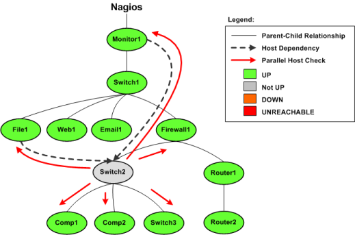

Up To: Contents
Up To: Contents
 See Also: Dependencies, Service Checks, Host Checks, Cached Checks
See Also: Dependencies, Service Checks, Host Checks, Cached Checks
Introduction
Host and service dependencies can be defined to allow you greater control over when checks are executed and when notifications are sent out. As dependencies are used to control basic aspects of the monitoring process, it is crucial to ensure that status information used in the dependency logic is as up to date as possible.
Nagios allows you to enable predictive dependency checks for hosts and services to ensure that the dependency logic will have the most up-to-date status information when it comes to making decisions about whether to send out notifications or allow active checks of a host or service.
How Do Predictive Checks Work?
The image below shows a basic diagram of hosts that are being monitored by Nagios, along with their parent/child relationships and dependencies.
The Switch2 host in this example has just changed state from an UP state to a problem state. Nagios needs to determine whether the host is DOWN or UNREACHABLE, so it will launch parallel checks of Switch2's immediate parents (Firewall1) and children (Comp1, Comp2, and Switch3). This is a normal function of the host reachability logic.
You will also notice that Switch2 is depending on Monitor1 and File1 for either notifications or check execution (which one is unimportant in this example). If predictive host dependency checks are enabled, Nagios will launch parallel checks of Monitor1 and File1 at the same time it launches checks of Switch2's immediate parents and children. Nagios does this because it knows that it will have to test the dependency logic in the near future (e.g. for purposes of notification) and it wants to make sure it has the most current status information for the hosts that take part in the dependency.

That's how predictive dependency checks work. Simple, eh?
 Note: Predictive service dependency checks work in a similiar manner to what is described above. Except, of course, they deal with services instead of hosts.
Note: Predictive service dependency checks work in a similiar manner to what is described above. Except, of course, they deal with services instead of hosts.
Enabling Predictive Checks
Predictive dependency checks involve rather little overhead, so I would recommend that you enable them. In most cases, the benefits of having accurate information for the dependency logic outweighs the extra overhead imposed by these checks.
Enabling predictive dependency checks is easy:
Cached Checks
Predictive dependency checks are on-demand checks and are therefore subject to the rules of cached checks. Cached checks can provide you with performance improvements by allowing Nagios to forgo running an actual host or service check if it can use a relatively recent check result instead. More information on cached checks can be found here.